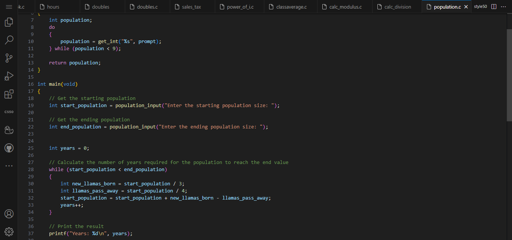
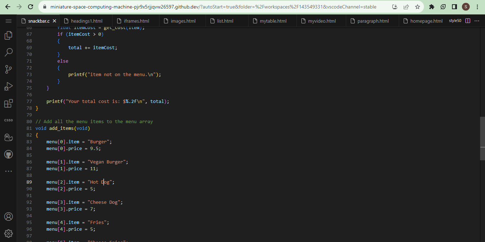

This is my llama code which was one of the first projects I did in this AP computer science class the objective of this assignment was to set a starting population and a end population.
With this in mind an example of how this code runs is if we were to start with n = 1200 llamas, then in the first year,1200 / 3 = 400 new llamas would be born and 1200 / 4 = 300 llamas would
pass away. At the end of that year, we would have 1200 + 400 - 300 = 1300. The code does all the math and prints out the amount of llamas for the end of the year.
With this code we made an array of a menu crating this array was very important because it allowed not only store but also organize multiple values of the same data in single variable. Variables are important because they store specific data.
this code is pretty much a interactive menu where users can see the menu and prices of the items and choose what they want and the code will output their total.
